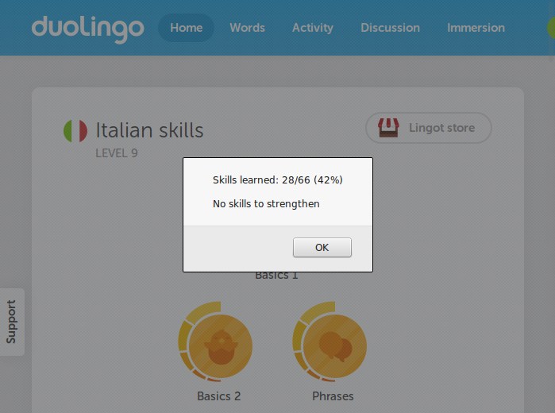
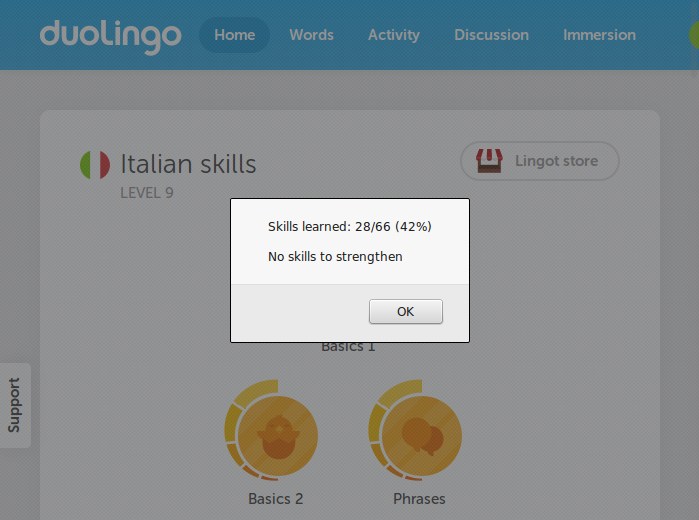
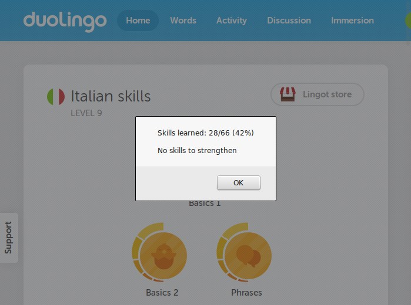

Duolingo Tree Progress ← drag this link
- Drag the link above and drop it onto your browser's bookmarks bar
- Enter duolingo.com and go to the skills tree page (any language)
- Click on the bookmark - a popup with statistics will show up
 

Duolingo Tree Progress ← drag this link
